Beranda / Data lingkungan
Data lingkungan
Data survei lapangan dan data sekunder yang menjadi dasar analisis: batimetri, pasang surut, angin, dan gelombang. Setiap angka disertai sumber, periode, dan batas penafsirannya.
Batimetri dan datum vertikal
Kedalaman diukur dengan single-beam echo sounder (SBES) CHCNAV D230 yang dipasang pada perahu survei bersarat kecil, dengan posisi dari GNSS. Data dibersihkan, dikoreksi sarat transduser, dikoreksi pasang surut sesuai waktu pengukuran, lalu direduksi ke datum LWS (Lowest Water Spring, surut terendah saat pasang purnama).
- Area survei
- Rencana ± 1.500 ha, spasi lajur rencana ± 200 m, disesuaikan di lapangan
- Elevasi dasar, seluruh area
- +0,4 s.d. −4,3 m LWS Diolah
- Elevasi dasar, sekitar madrasah
- +0,2 s.d. −0,5 m LWS Diolah
- Acuan geodetik
- WGS 84, UTM zona 49 S; BM SMG5 (0,25 m LWS) dan Titik Bantu (±1,232 m LWS), diikat ke CORS CSMG dan CSEM
Sumber: Naskah paper kajian lapangan tim (2026), bagian 3.1; Laporan kemajuan penelitian (Agustus 2026), bagian C.4. Survei Juni–Juli 2026.
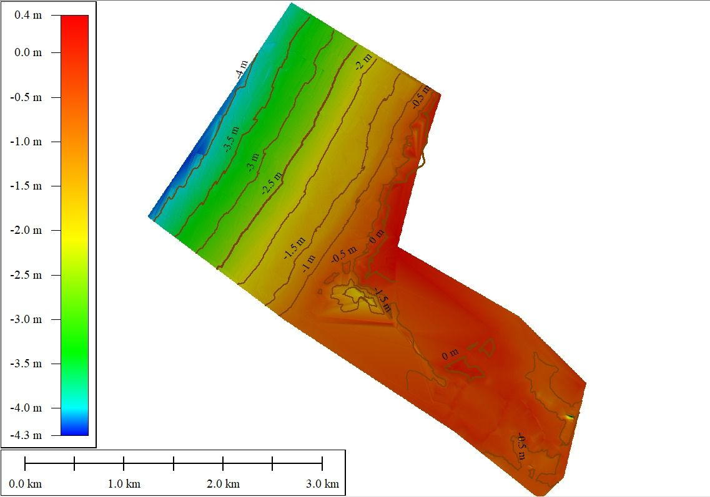
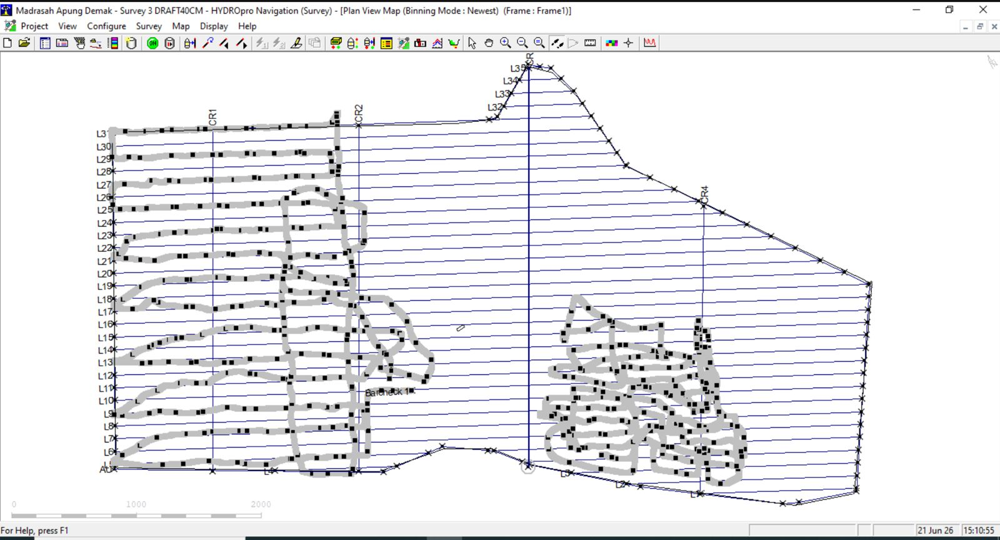
Pasang surut
Muka air direkam dengan Automatic Water Level Recorder (AWLR) selama 15 hari, 18 Juni – 2 Juli 2026, di stasiun 6°54′50,80″ LS, 110°31′7,53″ BT. Rekaman ini sekaligus menjadi koreksi vertikal data batimetri.
Grafik memuat 360 data muka air jam-jaman dari assets/data/data-penelitian.json. Aktifkan JavaScript dan buka situs melalui server web untuk menampilkannya.
Sumber: Laporan kemajuan penelitian (Agustus 2026), tabel data jam-jaman AWLR. Terukur Data asli dalam cm terhadap nol palem/AWLR. Konversi ke LWS dihitung situs ini sebagai pembacaan − (S0 − Z0) = pembacaan − (71,61 − 60,23) cm; konversi ini perlu konfirmasi surveyor.
| Parameter | Nilai | Status |
|---|---|---|
| Muka air maksimum teramati | 113,7 cm | Terukur |
| Muka air minimum teramati | 25,1 cm | Terukur |
| Tunggang teramati (15 hari) | 88,6 cm | Terukur |
| Rata-rata pengamatan, S0 | 71,61 cm | Diolah |
| Bilangan Formzahl, F | 1,29 | Diolah |
| HWS terhadap LWS | 114,06 cm | Diolah |
| MHWS terhadap LWS | 81,19 cm | Diolah |
| MSL terhadap LWS (Z0) | 60,23 cm | Diolah |
| MLWS terhadap LWS | 39,27 cm | Diolah |
| LWS | 0,00 cm | Diolah |
| Konstituen | Amplitudo (cm) |
|---|---|
| M2 | 9,38 |
| S2 | 11,58 |
| N2 | 3,32 |
| K2 | 5,90 |
| K1 | 19,87 |
| O1 | 7,10 |
| P1 | 6,40 |
| M4 | 0,04 |
| MS4 | 0,04 |
Artinya bagi bangunan
Dengan dasar sekitar +0,2 hingga −0,5 m LWS dan rentang HWS–LWS sekitar 1,14 m, kedalaman air di bawah madrasah berubah dari hampir nol sampai sekitar 1,6 m dalam satu siklus pasang surut. Platform mengikuti perubahan ini melalui gaya apung, tetapi kondisi gelombang yang dibatasi kedalaman dan panjang tiang pemandu yang bekerja ikut berubah dalam sehari.
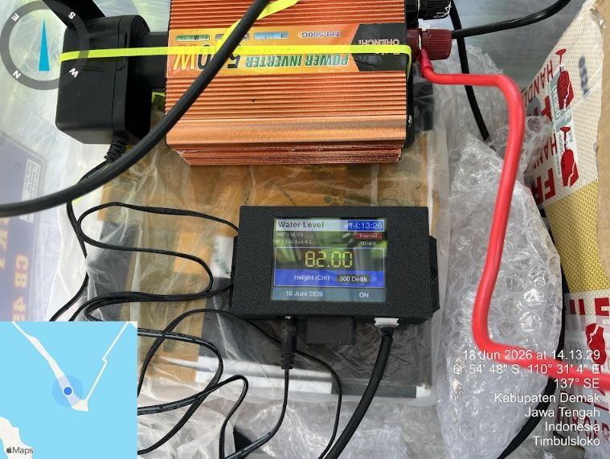
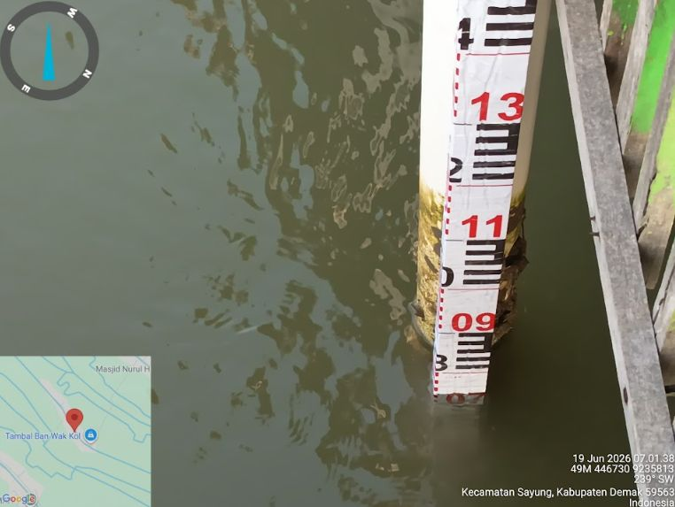
Angin 2006–2025
Data angin per jam dari hindcast ECMWF (komponen u10 dan v10) diambil di titik 6,91° LS, 110,51° BT, lalu diolah menjadi kecepatan dan arah.
- Kecepatan rata-rata
- 1,62 m/s
- Kecepatan maksimum
- 9,67 m/s (2012, sektor barat laut)
- Arah paling sering
- Tenggara 26,20%, barat laut 19,86%, selatan 19,69%
- Pola musiman
- Desember–Januari dominan barat–barat laut; pertengahan tahun dominan selatan–tenggara
- Rata-rata bulanan
- Tertinggi Januari 2,15 m/s dan Februari 2,11 m/s; terendah April 1,17 m/s
Sumber: Naskah paper kajian lapangan tim (2026), bagian 3.3; Laporan kemajuan penelitian (Agustus 2026), bagian C.2.
Diolah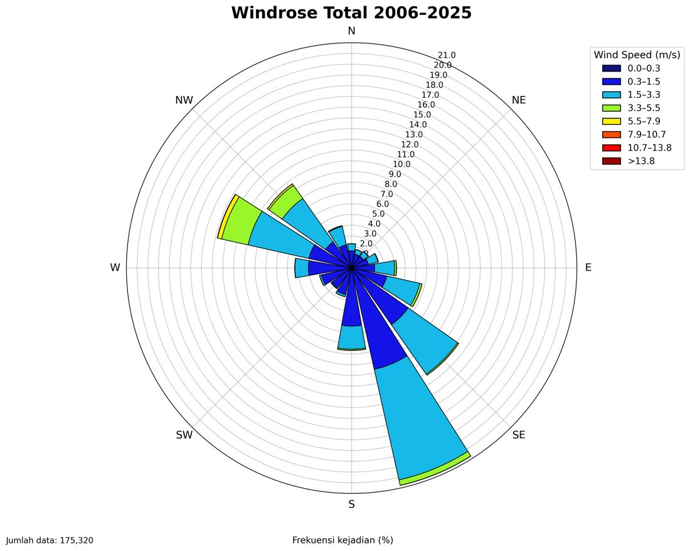
Maksimum tahunan
Grafik maksimum tahunan angin dimuat dari data JSON.
Sumber: Laporan kemajuan penelitian (Agustus 2026), Tabel 2 (annual maximum series). Diolah
Nilai ekstrem
| Periode ulang (tahun) | U | TL | T | TG | S | BD | B | BL |
|---|---|---|---|---|---|---|---|---|
| 2 | 3,67 | 3,57 | 4,80 | 4,51 | 4,35 | 2,29 | 5,65 | 7,86 |
| 5 | 3,89 | 4,01 | 5,18 | 4,92 | 4,93 | 2,54 | 6,23 | 8,52 |
| 10 | 3,99 | 4,23 | 5,35 | 5,12 | 5,23 | 2,71 | 6,51 | 8,89 |
| 20 | 4,07 | 4,39 | 5,49 | 5,29 | 5,48 | 2,87 | 6,73 | 9,21 |
| 50 | 4,15 | 4,56 | 5,62 | 5,47 | 5,77 | 3,07 | 6,94 | 9,57 |
| 100 | 4,20 | 4,66 | 5,71 | 5,59 | 5,95 | 3,23 | 7,07 | 9,83 |
Distribusi diuji: Weibull, Normal, Log-Normal, Log-Pearson III, Gumbel, dan GEV; dipilih RMSE terendah. Sektor barat laut (BL) mengontrol seluruh periode ulang (Log-Normal). Singkatan arah: U utara, TL timur laut, T timur, TG tenggara, S selatan, BD barat daya, B barat, BL barat laut.
Gelombang 2006–2025
- Hs rata-rata
- 0,427 m (tinggi gelombang signifikan rata-rata, bukan gelombang desain)
- Hs maksimum
- 2,999 m (2006, sektor barat laut)
- Arah paling sering
- Barat laut 33,13%, timur 32,41%, timur laut 22,95%
- Pola musiman
- Desember–Februari dominan barat laut; pertengahan tahun dominan timur–timur laut
- Hs rata-rata bulanan
- Januari 0,793 m; Februari 0,676 m; Desember 0,531 m; terendah April 0,256 m dan November 0,247 m
Sumber: Naskah paper kajian lapangan tim (2026), bagian 3.4; Laporan kemajuan penelitian (Agustus 2026), bagian C.2.
Diolah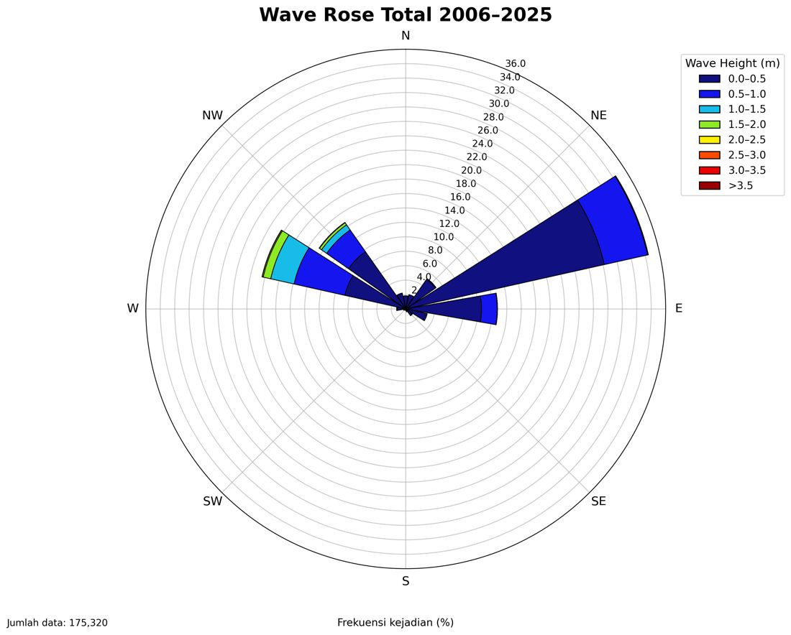
Mawar gelombang bulanan (12 gambar)
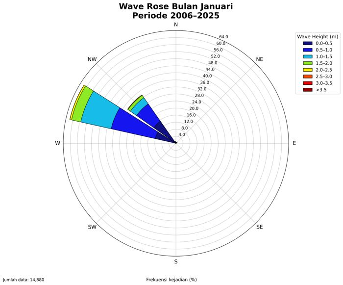
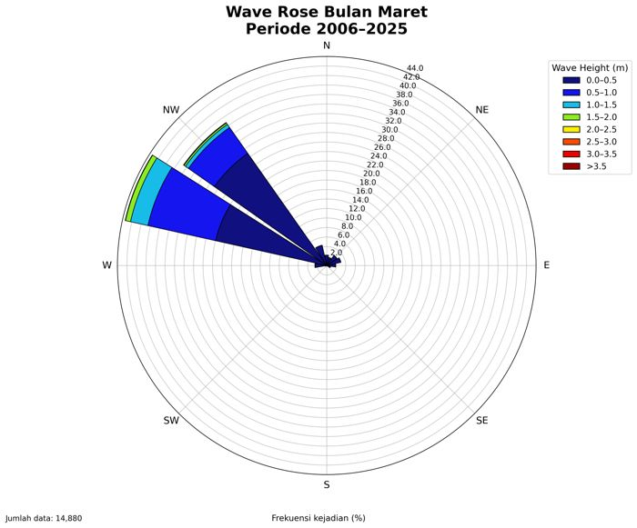
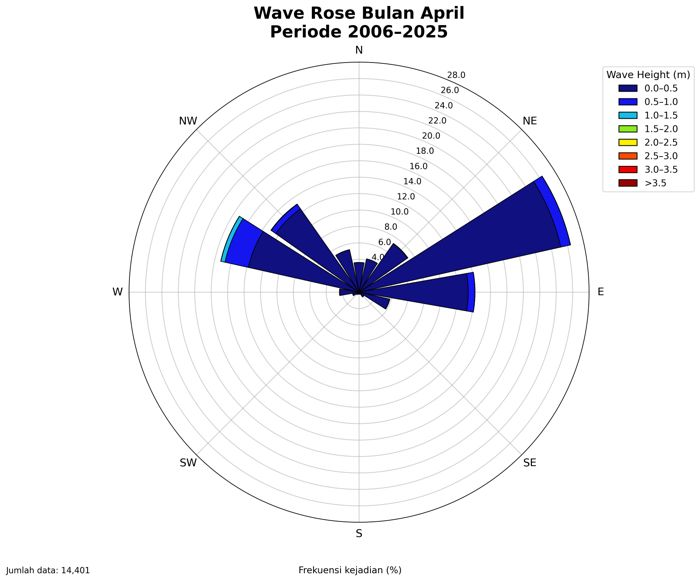
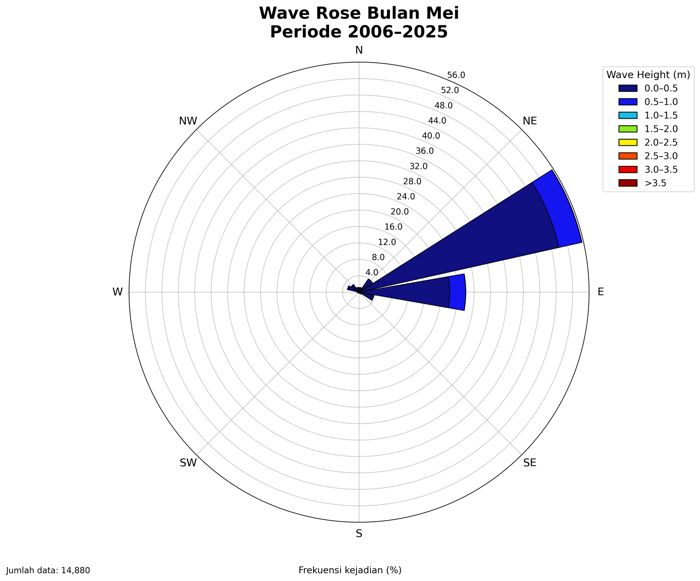
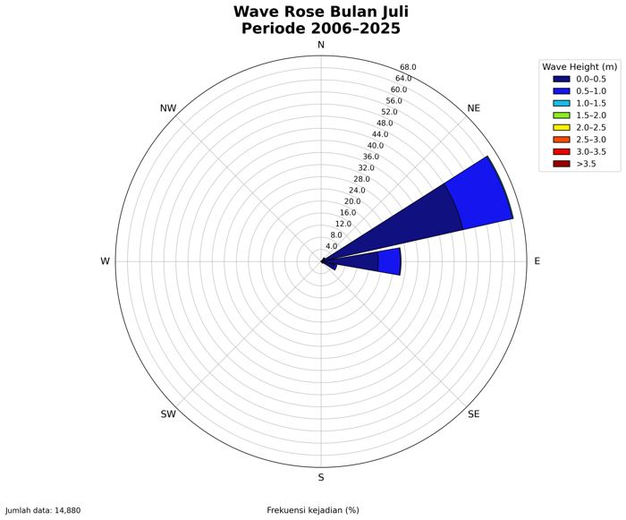
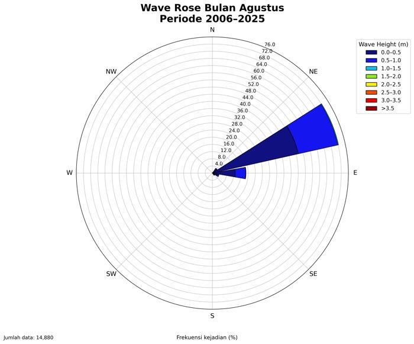
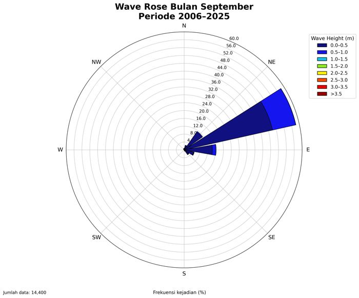
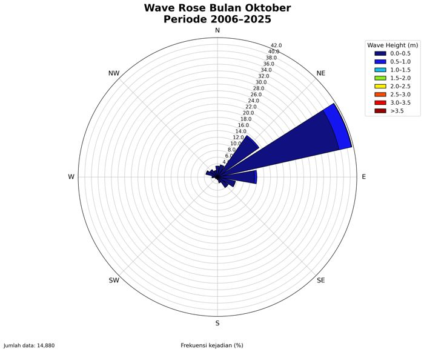
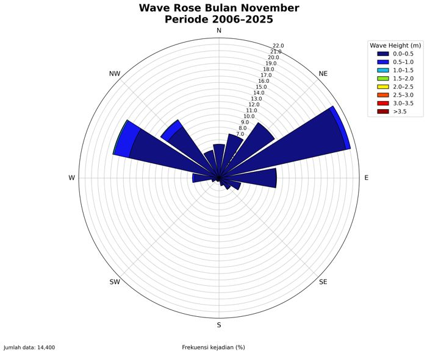
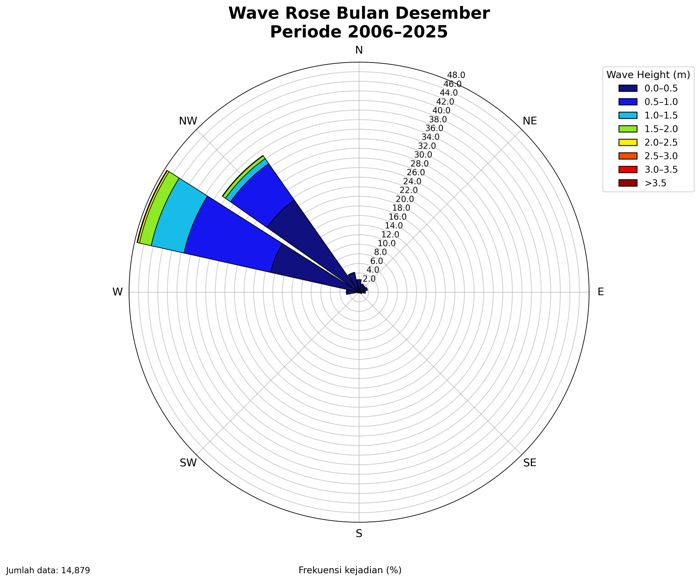
Diolah Data bulan yang sama digabung untuk 2006–2025.
Maksimum tahunan
Grafik maksimum tahunan gelombang dimuat dari data JSON.
Sumber: Laporan kemajuan penelitian (Agustus 2026), Tabel 4. Diolah Titik pada grafik adalah Hs maksimum tahun itu di antara delapan sektor.
Nilai ekstrem
| Periode ulang (tahun) | U | TL | T | TG | S | BD | B | BL |
|---|---|---|---|---|---|---|---|---|
| 2 | 0,37 4,19 | 0,93 5,87 | 0,99 6,01 | 0,53 4,79 | 0,31 3,92 | 0,26 3,69 | 1,55 7,11 | 2,18 8,06 |
| 5 | 0,42 4,37 | 1,06 6,16 | 1,12 6,31 | 0,65 5,16 | 0,35 4,11 | 0,31 3,93 | 1,97 7,76 | 2,45 8,41 |
| 10 | 0,45 4,48 | 1,12 6,31 | 1,22 6,50 | 0,73 5,37 | 0,37 4,18 | 0,35 4,08 | 2,29 8,20 | 2,60 8,60 |
| 20 | 0,47 4,59 | 1,18 6,43 | 1,30 6,67 | 0,79 5,55 | 0,38 4,22 | 0,38 4,22 | 2,63 8,64 | 2,73 8,76 |
| 50 | 0,51 4,72 | 1,24 6,55 | 1,42 6,88 | 0,88 5,76 | 0,39 4,25 | 0,42 4,39 | 3,14 9,22 | 2,90 8,95 |
| 100 | 0,54 4,81 | 1,29 6,63 | 1,50 7,03 | 0,94 5,90 | 0,39 4,27 | 0,45 4,51 | 3,57 9,67 | 3,01 9,08 |
Angka tebal: sektor dengan Hs terbesar pada periode ulang tersebut. BL (barat laut) mengontrol 2–20 tahun (Log-Pearson III); B (barat) mengontrol 50–100 tahun (GEV). Tp diperkirakan dari hubungan power-law Hs–Tp seluruh pasangan data per jam.
Sumber: Naskah paper kajian lapangan tim (2026), Tabel 6.
Parameter lingkungan untuk analisis
| Parameter | Nilai yang tersedia | Status | Dipakai untuk |
|---|---|---|---|
| Elevasi dasar di lokasi | +0,2 s.d. −0,5 m LWS | Diolah | Kedalaman eksisting, model gelombang |
| Datum pasang surut | HWS 1,14; MHWS 0,81; MSL 0,60; MLWS 0,39 m LWS | Diolah | Muka air untuk skenario |
| Gelombang lepas pantai | Hs dan Tp ekstrem per sektor, periode ulang 2–100 tahun | Diolah | Syarat batas model transformasi |
| Angin | Kecepatan ekstrem per sektor | Diolah | Beban angin, pembangkitan gelombang lokal |
| Laju penurunan tanah | 4,6–6 cm/tahun (Sayung); 16,3 cm/tahun (batas atas Demak) | Literatur Skenario | Batimetri proyeksi 10 tahun |
| Hs dan Tp di lokasi madrasah | Belum tersedia | Sedang berjalan | Beban pada model global |
| Data tanah dasar untuk jepitan tiang | Belum tersedia; direkomendasikan penyelidikan geoteknik | Direncanakan | Model interaksi tiang–tanah |